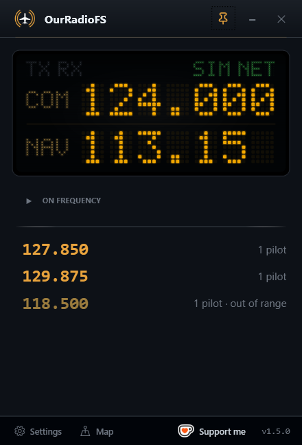

OurRadioFS is a virtual VHF radio for Microsoft Flight Simulator and X-Plane. Tune a COM frequency and speak to whoever is on it and in range — real radio distance, real fade-out, one shared sky. MSFS and X-Plane pilots share the same frequencies.
0 pilots · 0 frequencies now See who's flying on the live map →
Everything is driven by your sim: your frequency, your position, your altitude. You only hear the people you would actually reach.
Who you hear depends on distance and altitude, computed live — just like a real radio. Fly higher, reach further.
Set your COM1 frequency in the sim, hold your push-to-talk key, and you're on the air with everyone on that frequency.
Voices crackle and fade as pilots drift to the edge of range, so the airwaves feel alive instead of pin-sharp.
Hear the VOR/ILS identifier loud and clear over the engines, with a blinking Morse light on the display.
Optional and off by default: switch it on to share your position, and see who's flying and on which frequency. Find someone to fly with, then tune in. Open the map →
Optional MSFS toolbar panel: see who's on your frequency, nearby active frequencies, and mute anyone without leaving the cockpit.
No accounts, no email, no tracking. Voice is relayed live and never recorded. Your position is only used to compute range — unless you opt in to the map.
Grab the free installer from flightsim.to and run it. No account to create.
Pick your callsign and a push-to-talk key. That's the whole setup.
Tune a COM frequency in the sim and talk to whoever's on it in range.
OurRadioFS is built by a single developer and runs on a server that costs real money. If it makes your flights better, you can help keep it on the air.